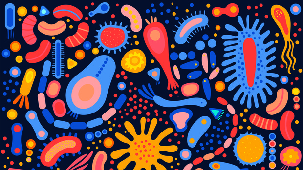
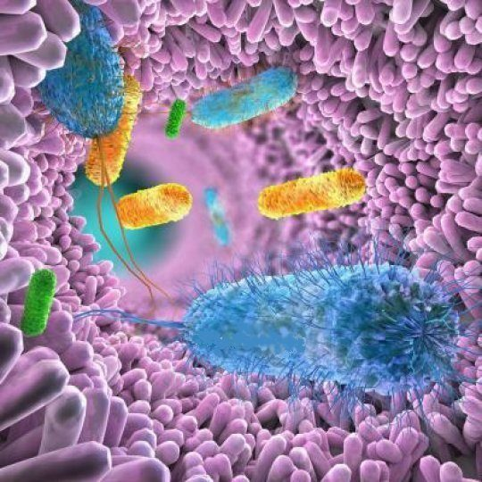

Определение микробиома
Cобирательное название микроорганизмов, находящихся в симбиозе с организмом хозяина. Также под микробиомом подразумевают совокупность геномов микробных популяций в человеке. Различают микробиом кожи, полости рта, кишечника и т.д.
Микробиота используется для характеристики микробиоценоза отдельных органов и систем, генетического материала и взаимосвязей внутри экологической ниши в определенный временной период на определенной территории. Микробиота взаимодействует с остальными органами и системами, определяя функционирование организма в целом как у здорового человека, так и при заболеваниях.

Резюме
Люди практически идентичны по своему генетическому составу, однако небольшие различия в нашей ДНК порождают огромное фенотипическое разнообразие во всей человеческой популяции. В отличие от этого, метагеном человеческого микробиома - общее содержание ДНК микробов, населяющих наши тела, - является довольно изменчивым, и только треть составляющих его генов обнаруживается у большинства здоровых людей. Понимание этой изменчивости в «здоровом микробиоме», таким образом, было одной из главных проблем в исследованиях микробиома, начиная по крайней мере с 1960-х годов, продолжающихся в рамках проекта «Микробиом человека» и за его пределами. Каталогизация необходимых и достаточных наборов признаков микробиома, поддерживающих здоровье, и нормальных диапазонов этих признаков в здоровых популяциях является важным первым шагом к выявлению и коррекции микробных конфигураций, которые вовлечены в болезнь.
Для достижения этой цели в ряде популяционных исследований были задокументированы диапазоны и разнообразие как таксономических составов, так и функциональных потенциалов, обычно наблюдаемых в микробиомах здоровых популяций, а также возможные движущие факторы, такие как география, диета и образ жизни. Здесь мы рассмотрим несколько появившихся определений «здорового микробиома», современное понимание диапазонов здорового микробного разнообразия и такие пробелы, как характеристика молекулярной функции и разработка экологических методов лечения, которые будут рассмотрены в будущем.
